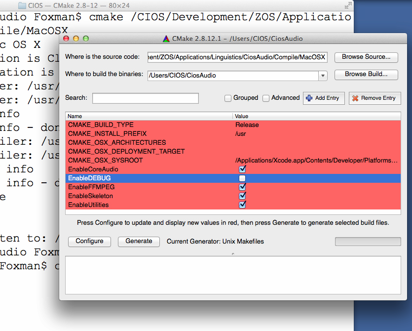
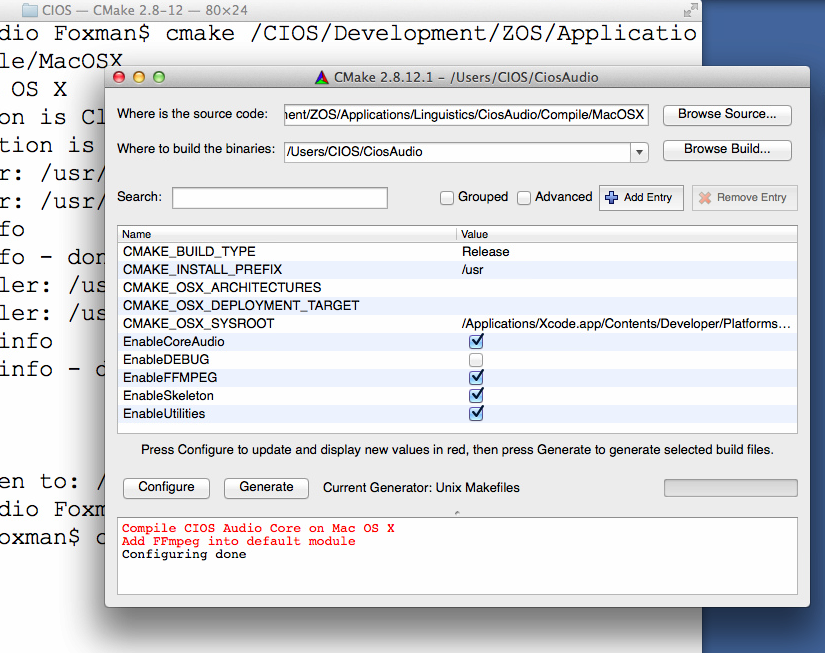

Apple Mac OS X平台编译
编译CIOS Audio Core函式库
在环境已经配置好的状况下，编译CIOS Audio Core是相当简单的：|
mkdir BuildCiosAudioCore |
设定细部
如果您需要指定编译的细节，我们建议您使用cmake-gui，如果您希望可以完全透过参数指定编译参数，请到CMake官方网站位址《http://www.cmake.org》，参考cmake相关的使用细节。|
cd Somewhere/Temporary
mkdir CiosAudio |
接下来改变您所需要改变的设定：

按下《Configure》：

按下《Generate》：

然后：
|
cd CiosAudio |
修改内定的Namespace
CIOS Audio Core的内定Namespace是CiosAudio，您可以透过以下方式修改Namespace：|
cd Somewhere/Temporary
mkdir CiosAudio |
Utilities及FFmpeg的设定
如果您想要使用FFmpeg的功能，Utilities的功能必须打开。编译使用CIOS Audio Core的应用程序
编译应用程序必须与libCaCore.a链结，此外由于使用Apple Core Audio作为音讯系统的底层核心，您必须与以下四个Framework链结：
- CoreAudio
- CoreServices
- AudioUnit
- AudioToolBox
此外如果有使用FFmpeg，您必须弄清楚您的FFmpeg需要跟哪些额外的函式库链结，详细请见《FFmpeg函式库编译》，一般而言有以下几个：
- avcodec
- avformat
- avutil
- swresample
- swscale
- iconv
- z
- bz2
- mp3lame
- twolame
- gsm
如果您不是那麽清楚需要跟哪些函式库链结，那麽，多尝试及多向FFmpeg使用族群发问，应该是个比较好的解决方式。
一般程序
使用函式库
在您的程序编译档当中，加入include path及lib path的设定，并且加上-lCaCore的设定即可。箝入您的程序
您只要将以下目录的所有hpp及cpp档全部加入您的程序计画档中即可：|
CiosAudio/*.hpp |
此外，记得加入FFmpeg所需要的函式库以及路径设定。
Qt
使用函式库
在您的Qt程序当中，计画档的PRO档中，加入下面这几行即可：|
INCLUDEPATH += ${WHEREVER_CIOS_AUDIO_INCLUDE_PATH} |
此外，记得加入FFmpeg所需要的函式库以及路径设定。
箝入Qt的程序
在您的Qt程序当中，计画档的PRO档中，加入下面这几行即可：|
include ($${PWD}/CiosAudio/CiosAudio.pri) |
此外，记得加入FFmpeg所需要的函式库以及路径设定。